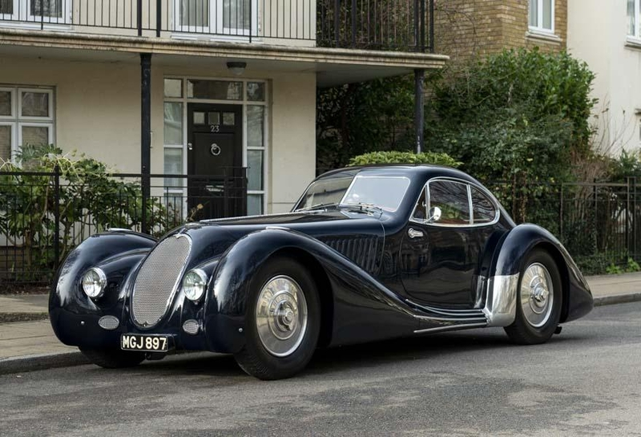

Bentley

„Bentley” - მანქანა, რომელიც წლების განმავლობაში სამეფო კარის წარმომადგენელთათვის იქმნებოდა. მას ძველი ისტორია აქვს, რომელიც ინგლისში ჯერ კიდევ 1919 წლიდან იწყება. ვოლტერ ბენტლიმ თავისი პირველი ავტომანქანა ააწყო. იქამდე თავის ძმასთან ერთად ფრანგულ მანქანებს ჰყიდდა. აქედან გამომდინარე, საკუთარის შექმნის სურვილი ყოველთვის ჰქონდა. ვოლტერ ბენტლიმ პირველი მანქანა „Bentley Motors-ის” სახელით დაარეგისტრირა და ამავე წელს ლონდონის გამოფენაზე გაიტანა. 1931 წელს „Bentley Motors-ი” „Rolls-Royce-მა” შეისყიდა და ამით მდიდრული ბრენდის სახელიც მოუტანა. ამ მარკის მანქანა ყველა მილიონერს ჰყავდა. მეტიც დიდ ნაწილს დიდი ბრიტანეთის სამეფო კარი უკვეთავდა. თუმცა მოგვიანებით „Bentley-ის” ავტომობილების ტექნოლოგია აღარ ვითარდებოდა, შესაბამისად მანქანებმა ფასი დაკარგეს, მათი შეძენა კი ყველასთვის ხელმისაწვდომი გახდა image ახლა „Bentley-ის” გაყიდვები სულ უფრო მატულობს. 2007 წელს მისმა შემოსავალმა 2.1 მილიარდი ფუნტი შეადგინა. სუბსიდირებულ „Bentley Motors-ში” კი სულ 4 ათასი დასაქმებულია. კომპანიის სათაო ოფისი ინგლისში, ქალაქ კრივში მდებარეობს.